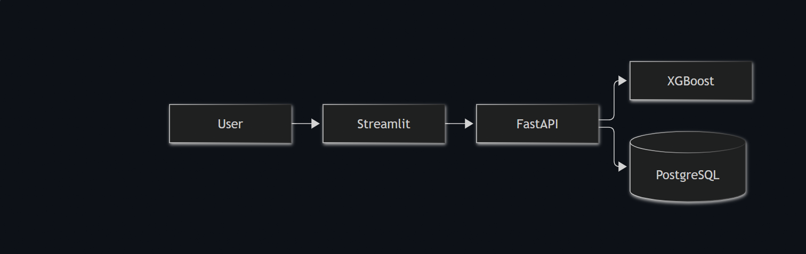
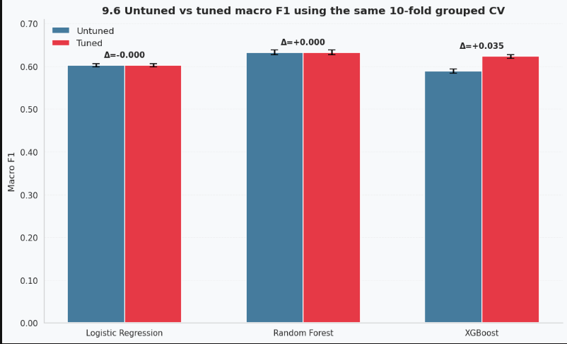
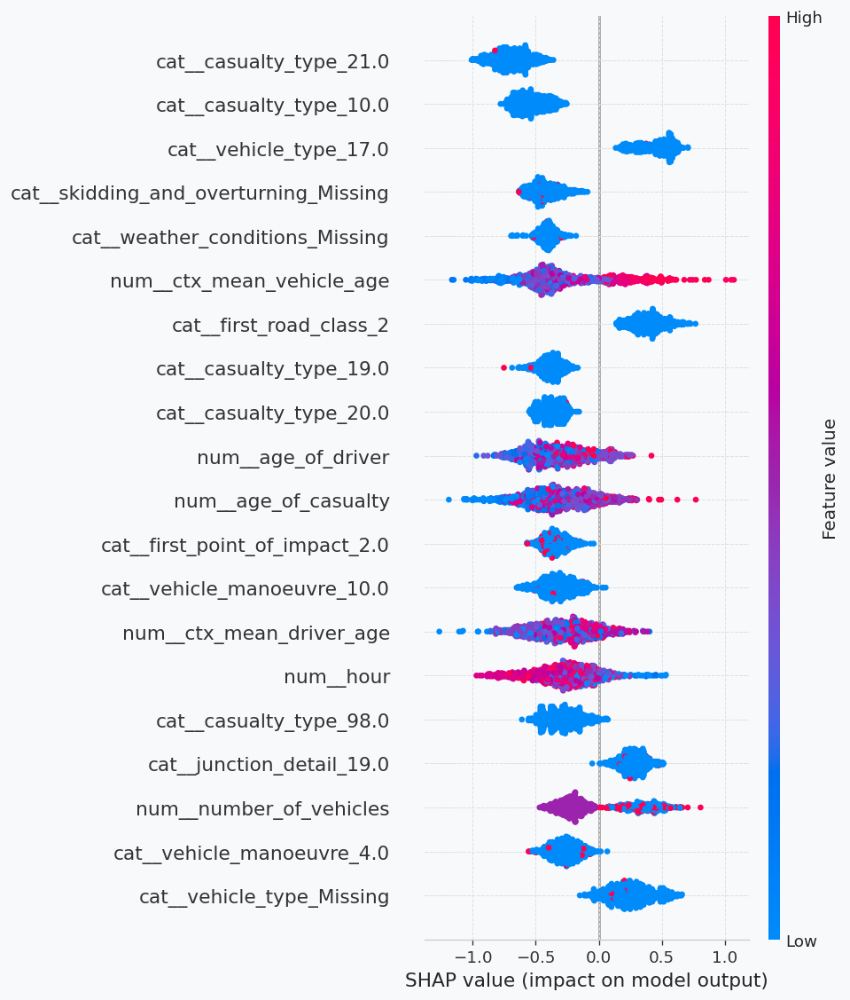
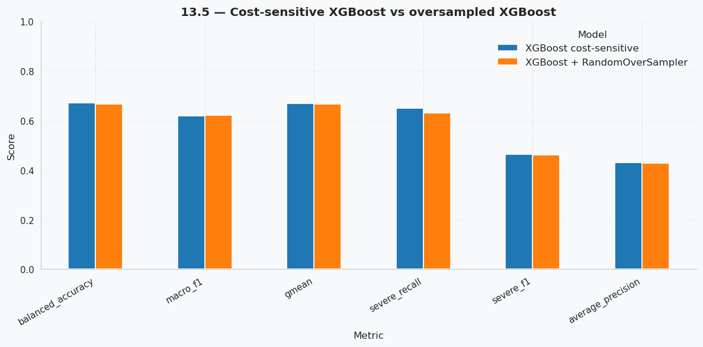

ROAD SAFETY / CASE STUDY
Injury Severity Prediction for Road Casualties
Comparing linear and ensemble classifiers on Great Britain STATS19 administrative road-casualty records.
Project findings are historical evaluation results, not live predictions or deployed public-sector decisions.
The question
Can historical collision, vehicle and casualty information help identify serious versus slight injury outcomes, and explain which attributes drive the model?
What I built
I merged STATS19 collision, vehicle and casualty tables into 132,977 casualty-level records and selected 42 raw predictors. Train/test splits and cross-validation were grouped by collision identifier to reduce leakage. I compared Logistic Regression, Random Forest and XGBoost, used SHAP for interpretation and published an interactive Streamlit demo.
What I found
The final held-out XGBoost model achieved macro-F1 0.619, Severe-class recall 0.649 and ROC-AUC 0.739. Grouped SHAP highlighted casualty type, vehicle manoeuvre and vehicle type as influential features. These associations are not causal.
Things I kept in mind
Performance is moderate and the predicted Severe rate was higher than the observed rate. The study uses 2023 data, and the app is a demonstration, not a tool for real-time emergency or clinical decisions.
Project visuals
Selected real plots and diagrams from my modelling work.
Each figure below includes the question it helps answer, what you are looking at and the conclusion or limitation worth noticing. Open the image at full size if you want to inspect individual labels.

Early application sketch
Design sketch, not deployed architecture
This was an early diagram exploring how a UI, API, model and database could connect. The actual public demonstration is a Streamlit app.
The takeaway: The drawing is conceptual and should not be read as a claim that FastAPI or PostgreSQL is deployed in the live app.

Model comparison
Why compare an untuned baseline?
Logistic Regression, Random Forest and XGBoost were assessed using the same grouped cross-validation protocol, with macro-F1 chosen to weight the Severe and Slight classes equally.
The takeaway: XGBoost tuning improved cross-validated macro-F1, while the strongest Random Forest configuration remained unchanged. The final held-out XGBoost macro-F1 was 0.619.

SHAP interpretation
What drove the predictions?
The SHAP plot summarises contributions to the final XGBoost model. Casualty type, vehicle manoeuvre and vehicle type were influential predictor groups.
The takeaway: SHAP helps explain the model’s patterns; it does not show that changing any one feature would cause a different injury outcome.

Imbalance sensitivity
Does oversampling help?
The side-by-side comparison checks cost-sensitive XGBoost against random oversampling across macro-F1, Severe recall and other evaluation metrics.
The takeaway: Oversampling gave only a negligible macro-F1 gain and reduced Severe recall from 0.649 to 0.632, so class weighting was retained.